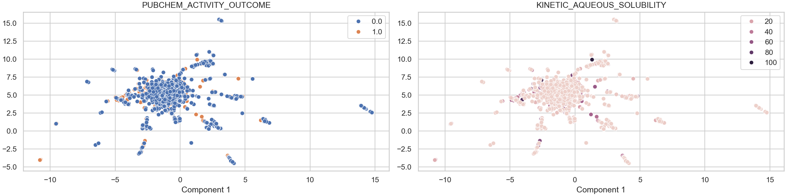
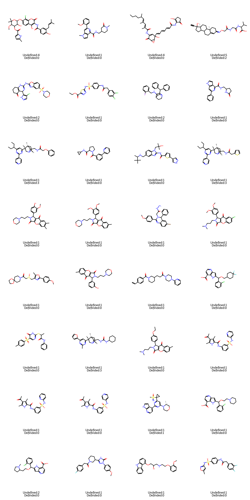
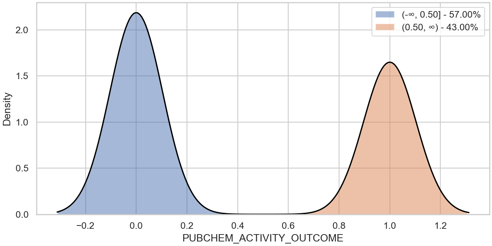
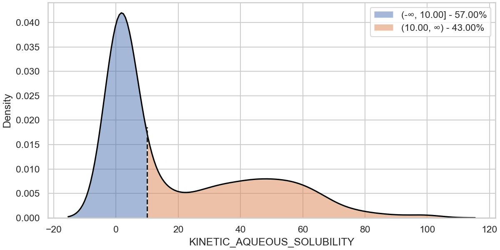
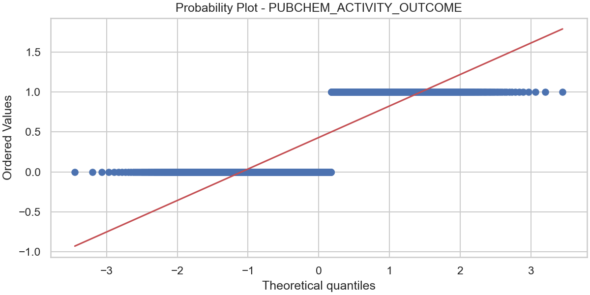
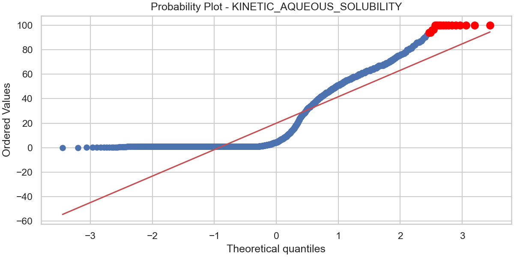
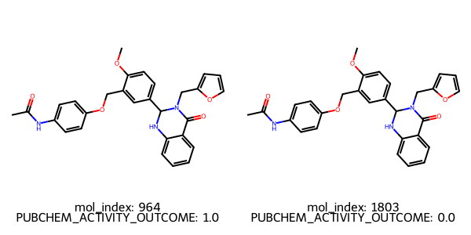
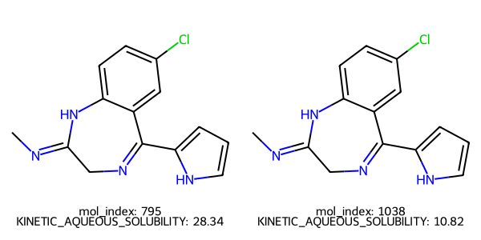

mol_curation
Logs
- New column added: MOL_smiles
- New column added: MOL_molhash_id
- New column added: MOL_molhash_id_no_stereo
- New column added: MOL_num_stereoisomers
- New column added: MOL_num_undefined_stereoisomers
- New column added: MOL_num_defined_stereo_center
- New column added: MOL_num_undefined_stereo_center
- New column added: MOL_num_stereo_center
- New column added: MOL_undefined_E_D
- New column added: MOL_undefined_E/Z
- Default `ecfp` fingerprint is used to visualize the chemical space.
- Molecules with undefined stereocenter detected: 425.
Images
Distribution in Chemical Space - ECFP

Molecules with undefined stereocenters

There are 425 molecules with undefined stereocenter(s). It's recommended to use and check the stereoisomers and activity cliffs in the dataset.
distribution
Images
Data distribution - PUBCHEM_ACTIVITY_OUTCOME

distribution
Images
Data distribution - KINETIC_AQUEOUS_SOLUBILITY

outlier_detection
Logs
- New column added: OUTLIER_PUBCHEM_ACTIVITY_OUTCOME
- Found 0 potential outliers with respect to the PUBCHEM_ACTIVITY_OUTCOME column for review.
- New column added: OUTLIER_KINETIC_AQUEOUS_SOLUBILITY
- Found 17 potential outliers with respect to the KINETIC_AQUEOUS_SOLUBILITY column for review.
Images
Outlier detection - PUBCHEM_ACTIVITY_OUTCOME

Outlier detection - KINETIC_AQUEOUS_SOLUBILITY

ac_stereoisomer
Logs
- New column added: AC_PUBCHEM_ACTIVITY_OUTCOME
- Found 2 activity cliffs among stereoisomers with respect to the PUBCHEM_ACTIVITY_OUTCOME column.
- The molecule index are : 964 ,1803
- New column added: AC_KINETIC_AQUEOUS_SOLUBILITY
- Found 2 activity cliffs among stereoisomers with respect to the KINETIC_AQUEOUS_SOLUBILITY column.
- The molecule index are : 795 ,1038
Images
Activity shifts among stereoisomers - PUBCHEM_ACTIVITY_OUTCOME

Activity shifts among stereoisomers - KINETIC_AQUEOUS_SOLUBILITY
